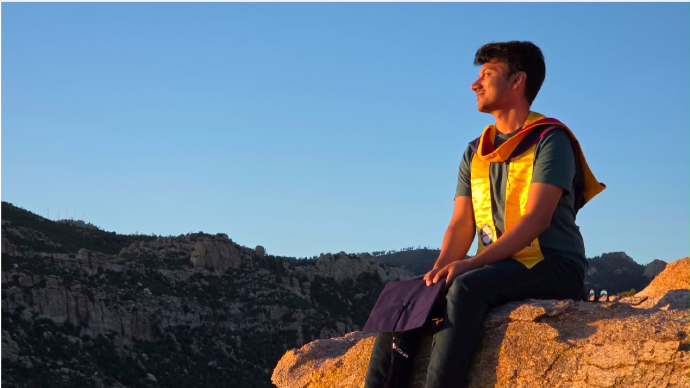

I work on applied AI and NLP, and I point it at two domains on purpose:
education and healthcare.
ehr_sentence_0412.txt
Pt reports fatigue and a
dry cough for 3 wks after a dust storm,
denies fever,
no night sweats.
Spotting the symptom is the easy part. Catching the no in front of it is where models trip.
01 about
I'm a first-year PhD student at George Mason University, advised by
Dr. Marcos Zampieri. To me, education and healthcare are the two most impactful
domains there are. Almost everyone passes through a classroom and a clinic, so good tools there
can make a real difference in a lot of lives.
Before Mason, I earned a BS and an MS in Computer Science at the University of Arizona.
There I built privacy-preserving clinical NLP for Valley Fever with Dr. Gondy Leroy,
which became my first paper (IEEE ICHI 2026),
and spent six semesters as a CS TA. Next goal: finish the PhD and become a faculty member.
What drives me is a genuine interest in designing and implementing reliable AI and NLP systems
for social good in impactful domains such as healthcare, education, and beyond.
from my PhD goals statement
genuinely helpfulSolves a real person's problem.
cheap to runEfficient in cost and compute.
fits inSeamless for the people using it.
keeps secretsSensitive data stays protected.

Grad photos above Tucson, spring 2026.
02 news
Started my PhD at GMU with Dr. Marcos Zampieri.
Presented my first paper at IEEE ICHI 2026, Minneapolis.
Graduated from Arizona with a BS and MS in CS.
Talk at the 11th ABRC-Flinn Research Conference, Phoenix. (agenda)
Poster at the AI Health Innovation Symposium, UArizona.
Joined the Deep Target NLP Lab as a graduate research assistant.
Led Custom GPT and agentic AI workshops at the Horizon Conference, Yuma.
Co-founded the UA AI Club. It grew to 100+ members.
Taught a 4-week LLM bootcamp to 40+ interns at AI Core.
Android intern at American Express GBT, Chicago.
03 research
Build the test set first, then find out what the model really does.
i.
Clinical NLP that stays inside the hospital
Valley Fever is common in Arizona and easy to miss. I extract its symptoms and social determinants
of health from EHR notes without sending patient data out: an LLM labels synthetic sentences,
and a small BERT model learns from them. I also built a 1,200-sentence challenge set and compared
clinical encoders with small local LLMs.
with Dr. Gondy Leroy · University of Arizona
ii.
Does the model reason, or pattern-match?
Controlled experiments on the FLDx2 logic corpus. Models got more distracted as irrelevant premises
piled up, and struggled with proofs involving negations.
with Dr. Liangming Pan · University of Arizona
iii.
LLMs and the intro CS classroom
My first PhD project builds on CSEPrompts (Raihan et al., J. Intell. Inf. Syst.).
I'm making it executable, so models get graded like students, by running their code against tests,
and extending it to more human and programming languages. As a Bangla speaker, that part is personal.
As a TA before and after ChatGPT, I saw how students lean on AI-generated code. I want tools that
help without harming real learning.
ongoing · with Dr. Marcos Zampieri and Nishat Raihan · GMU
With Dr. Gondy Leroy after the talk. June 2, 2026.
talks & posters
ABRC-Flinn2026
Overcoming Annotation and Privacy Bottlenecks: Synthetic Data Augmentation for Valley Fever Symptom and SDoH Extraction
Speaker, 11th ABRC-Flinn Research Conference, UA College of Medicine, Phoenix. May 5, 2026.
Abstract: Improving the Prediction and Recognition of Arizona Valley Fever.A. Zoha, M. Potla, G. Leroy, F. Donovan, S.S. Kandala, F. Wei, X. Jin, T. Bils, J.N. Galgiani.
University of Arizona, MIS Department · Tucson, AZ
Privacy-preserving clinical NLP for Valley Fever. Led to the ICHI 2026 paper.
2024 to 2026
Co-Founder & Vice President, UA AI Club
University of Arizona
Zero to 100+ members. Faculty talks and hands-on workshops.
2024
Student AI Engineer & Teaching Specialist
AI Core, ICDI · Tucson, AZ
Built RAG and agent chatbots for clients. Wrote and taught a 4-week LLM bootcamp.
2023
Software Development Intern
American Express Global Business Travel (Egencia) · Chicago, IL
Shipped a CO₂ emissions banner in the Android app, plus the API behind it.
2021 to 2024
Teaching Assistant, six semesters
University of Arizona, Computer Science
CSC 110, 120, and 210.
2021 to 2026
BS + MS, Computer Science
University of Arizona
Finished May 2026, GPA 3.90.
07 teaching & mentoring
Hints, not answers.
6semesters as a TA
50+TA candidates interviewed
40+bootcamp interns taught
100+AI club members
CSC 110 Introduction to Computer Programming (Python)
CSC 120 Computer Programming I (Python)
CSC 210 Software Development (Java)
bootcamp CustomGPTs & Web APIs for non-CS interns, AI Core
workshops LoRA, RAG, local LLMs, UA AI Club
08 snapshots
Away from the terminal. Tap to enlarge.
IEEE ICHI, Minneapolis. Custom GPTs training, AI Core. AI Core summer all-hands. Briefing interns before the showcase. Debugging over someone's shoulder. UA AI Club session. Prompting workshop. Local LLMs with Ollama. Hands-on workshop. Workshop crowd. Campus AI event. My desk at Amex GBT, Chicago.
09 things I built
Coursework that got out of hand.
Jeopardy QA engine
Lucene over 100K Wikipedia pages, reranked by GPT-4o-mini.
P@10.29 → 0.53
Java · Lucene · BM25 · LLM reranking
Multi-label emotion classifier
A CNN that tags text with any of 7 emotions.
micro-F10.83
Python · Keras
Arc-standard dependency parser
Transition-based parser with an SVM oracle, UD treebank.
UAS61.9%
Python · scikit-learn
Heart disease prediction
KNN, kernel KNN, and logistic regression with k-fold CV.
Python · scikit-learn
An operating system kernel
Processes, IPC, and device drivers from scratch in C.